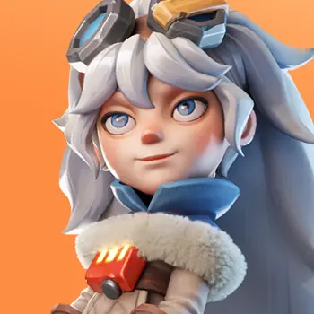
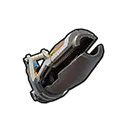

Суперснежок
Урон по площади + заморозкаМолли запускает огромный снежок, который наносит урон по области и замораживает врагов на 1,5 секунды.
Уровни 1–5: 180% / 198% / 216% / 234% / 252% от атаки.

Молли — один из самых доступных мифических героев первого поколения. Она особенно сильна в Арене и Освоении благодаря урону по площади и заморозке, а в Экспедиции усиливает урон всего отряда и может снижать входящий урон.
Максимальные базовые показатели Молли.
Работают в Освоении и на Арене.
Молли запускает огромный снежок, который наносит урон по области и замораживает врагов на 1,5 секунды.
Уровни 1–5: 180% / 198% / 216% / 234% / 252% от атаки.
Молли внезапно атакует противника и наносит высокий разовый урон.
Уровни 1–5: 150% / 165% / 180% / 195% / 210% от атаки.
Когда здоровье Молли опускается ниже 50%, её скорость атаки увеличивается.
Уровни 1–5: +20% / +30% / +40% / +50% / +60% к скорости атаки.
Работают в PvP, походах, рейдах и боях с войсками.
Каждая атака даёт 40% шанс снизить получаемый всеми войсками урон.
Уровни 1–5: −10% / −20% / −30% / −40% / −50% получаемого урона.
Атаки войск имеют 50% шанс увеличить наносимый урон.
Уровни 1–5: +10% / +20% / +30% / +40% / +50%.
Повышает наносимый всеми войсками урон без дополнительного условия.
Уровни 1–5: +5% / +10% / +15% / +20% / +25%.

Эксклюзивное снаряжение Молли усиливает её собственный урон и полезность обороняющихся войск.
1Суперснежок — главный урон по площади и контроль.
2Морозная засада — сильный дополнительный урон.
3Юношеское упорство — полезно, но зависит от низкого здоровья.
1Юношеская ярость — стабильный бонус урона.
2Ледяное господство — высокий потенциальный прирост урона.
3Призыв снега — защитный навык с шансом срабатывания.
Одна из лучших ролей Молли. «Суперснежок» наносит урон сразу нескольким врагам и даёт контроль заморозкой.
Сильный герой для прохождения ранних и средних этапов благодаря площади поражения и контролю.
Хороша в ранних поколениях как копейщик основного состава. Позже её постепенно вытесняют новые поколения.
Может использоваться в раннем основном марше, но для присоединения к чужому рейду есть герои с более предсказуемыми атакующими усилениями.
Да, особенно игрокам без доната. Молли легко развивается естественными источниками и даёт отличную отдачу в начале игры. Лучше использовать её собственные осколки и книги навыков, а редкие универсальные мифические осколки сохранять для героев, которых нельзя так же легко получить бесплатно.
Изображения взяты отдельными игровыми файлами. Механика и рекомендации сверены по нескольким актуальным источникам.